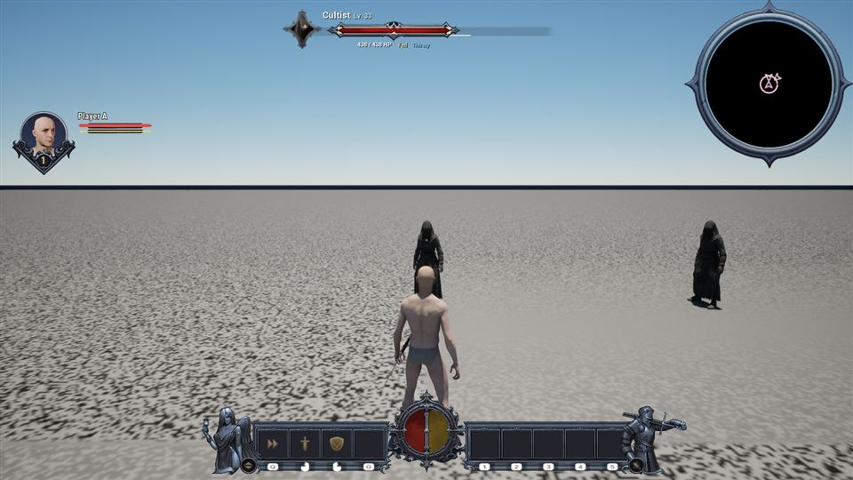
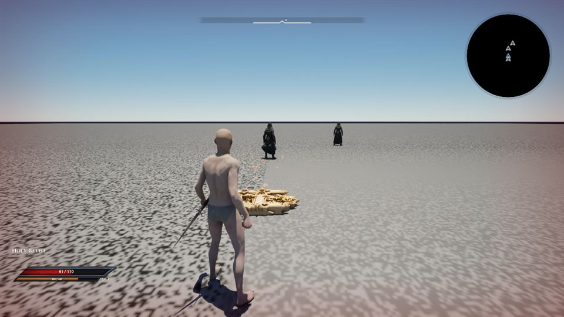

Be seen. Be remembered.
People respond to what they witness and remember. Your actions shape relationships and the conversations that follow.
A DARK FANTASY ACTION RPG
A kingdom caught between faith and corruption.
A world that remembers what you do.
What will you become?
01 — A KINGDOM OF CONSEQUENCES
Fight your way toward power, or stand against the corruption consuming the kingdom. The choice is yours.
Your journey moves through uneasy villages, hidden places and dark encounters. Speak to the people you meet, follow their stories, and decide where your loyalties lie.
Those decisions reach beyond a dialogue. Witnesses can remember violence. A familiar face can become an enemy. The law can come looking for you.
People respond to what they witness and remember. Your actions shape relationships and the conversations that follow.
Story choices guide your journey. The campaign’s decisive choice belongs to the story, rather than a hidden karma threshold.
Your map reveals the places you explore. Cursed Dolls connect discovery, training and travel as you bind their destinations.
WORLD LORE · PEOPLE & PLACES
The First Binding was an ancient attempt to contain a power that could not simply be destroyed. Its fractured legacy runs through the realm’s faiths, rituals and ruined places.
The older realm stories call it “a wound with a memory.” Holy, Blood and Dark are different approaches to the same supernatural inheritance. The people who wield them disagree about what power is for.
Work, worship and local loyalties surround your first encounters. The Barmaid and Priest connect the village’s everyday life to a much older mystery.
A secluded community with its own traditions and knowledge. Meet the Old Man, earn his trust and follow the threads that lead beyond his home.
Caves, unfamiliar creatures and paths away from the road make the wilderness a place of discovery. A child in the woods can begin a story of his own.
Royal authority, guards and city life sit alongside the people they govern. Its prison gives the law a physical presence, while older stories describe unofficial routes beneath the streets.
Ritual, belief and violence meet in the Cult’s settlements and arena. Its ordeal is part of the campaign; the Cursed Doll’s training arena serves a different purpose.
The Jester turns stories you have lived into performances. The curtain offers a return to familiar moments while your campaign waits outside.
The Doll, Priest, Nun, Old Man and royal court connect the realm’s stories. Explore their older profiles, regional histories and full storyboard in the archive, with story spoilers hidden until you choose to reveal them.
Explore people, places & storyboards ↗02 — STEEL, TIMING & INTENT
Read the fight. Find your opening.
Commit to the moment.
Light attacks, blocking, dodging, bows and weapon techniques give you different answers to a dangerous encounter. Position and timing matter when a fight turns against you.

YOUR CHARACTER · YOUR APPROACH
Weapons, equipment, techniques and Relief abilities shape how you answer an encounter. Skills and spell upgrades give you room to develop your approach.
Compare what you carry, read ability requirements and learn your weapon’s timing. Use the game’s current item and ability descriptions for costs and effects.
Conversations and actions shape personal relationships. A mentor’s trust can open a story or a lesson; a remembered assault can change the next conversation.
Individual relationships, faction standing, karma and Dark Points describe different things. Dark magic’s cost is separate from moral choices, and neither replaces the campaign’s explicit ending choice.
Map exploration belongs to each player. Teleporting reveals the arrival rather than a path through the intervening world; training and Jester performances do not reveal your campaign map.
Horses support travel for players and NPCs. The documented riding flow puts weapons away on mounting; holding Interact brakes before dismounting. Check the controls in your build.
These rules come from the Design Atlas’s October 8 snapshot. Its known limits and dated evidence are preserved in the archive.
03 — POWER HAS A LANGUAGE
Reliefs are your connection to magic. Carry the appropriate Relief, meet a spell’s requirements, and watch its inscription build toward release.
Heal wounds, strengthen your defenses and bind enemies with light. Holy magic offers a way to endure when the realm pushes back.
Binding Light restrains movement; a rooted enemy can still turn and attack.

The moment of release matters: an interruption before release cancels the cast without spending its cost.
04 — THE PEOPLE YOU LEAVE BEHIND
An encounter doesn’t end when you put your weapon away.
Witnessed crimes can draw a guard’s attention. Confrontations may offer refusal, a bribe or custody. People you have wronged can remember you when you return.
Consequences belong to the people and events involved. Pay attention to who is nearby, what they saw, and how they react.
Understand the journey ↓05 — ONE WORLD, DISTINCT JOURNEYS
Travel alone, host an online campaign, or share the screen with a second local player. A shared world still leaves room for personal discoveries.
Take your time with the people, places and choices of a solo campaign.
Online guests join the host’s world. Two local players can share the host’s screen.
Characters, knowledge and map exploration remain personal. Major world progression is shared, with the host committing the campaign’s ending.
WHEN THE CURTAIN RISES AGAIN
Return to eligible completed or failed quests as performances. Relive their story beats, then return to your campaign with its state restored. Performance gains and losses do not carry back.
Some performances require you to play alone. In eligible co-op performances, the performer returns to their own state while other players keep progress made outside the performance.
06 — BEFORE YOU RETURN TO THE GAME
This guide keeps major story reveals behind the curtain.
Eclipsed Realms is in development. Features, balance and presentation may change; availability depends on your build.
Carry or equip the appropriate Relief and meet the spell’s requirements. The game’s interface shows your available abilities and explains refused casts.
Discovery and travel are separate. Use a regional Cursed Doll to enter training and bind it to your character. From the Arena Doll’s travel map, you can select bound destinations.
Training enemies grant XP, but do not provide loot or count toward crimes, karma, persistent world memories or quest kills.
On a gameplay map, a second controller can press Start to join on the host’s machine. The two local players have separate characters and menus. Controller behavior is still being tested during development.
The Jester offers performances for eligible completed or failed quests. Your campaign state is restored when the performance ends. Saving is paused during a performance; some stories are solo-only.
The host’s campaign contains the shared world progression and ending. Your character, knowledge, relationships, map exploration and bound Doll destinations remain personal. Guests reconnect after the host loads a campaign.
The older guides include four-player online, combined two-household play, dungeon helpers, competitive arenas and New Game+ as design targets. This page does not confirm their availability. Use your current build’s menus and release information.
The Realm archive brings together their world profiles, storyboard, gameplay designs, images and project guides. The merge review explains conflicting claims and open questions. This About guide remains the reference for current player-facing rules.
Switch back to the game window or close this browser tab. This page is a companion guide and does not pause, save or change your campaign.
THE CHOICE IS YOURS